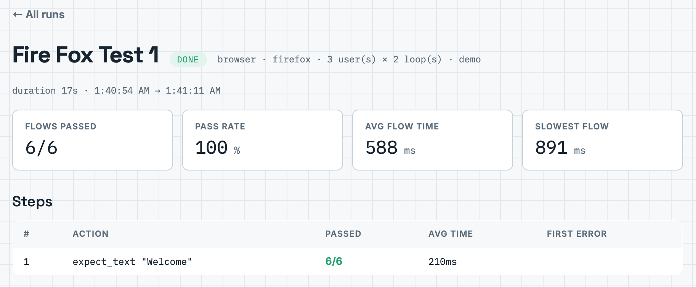
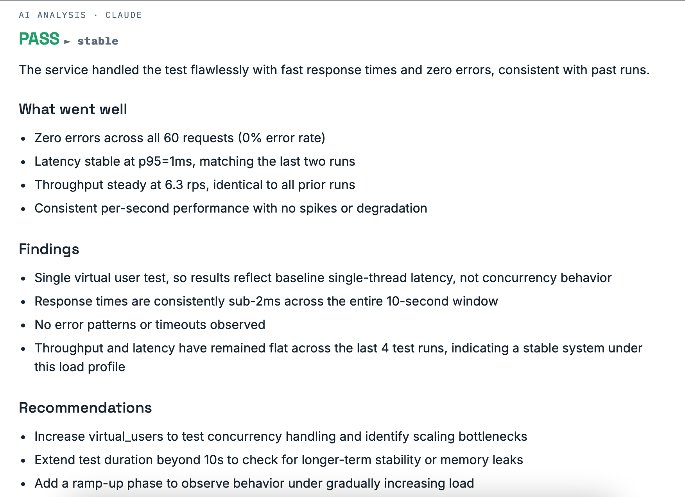

Every screen, every feature — explained for beginners
This guide walks through the whole tool with accurate illustrations of each screen —
drawn with the exact colors, layout, and labels of the real interface, so what you see
here is what you'll see at http://localhost:8080.
0 · One-time setup — from clone to running tool
Do this once, and every visit afterwards is just one command. Total time: about 15 minutes, most of it waiting for downloads. No coding knowledge needed.
Step 1 — Install Docker Desktop
Docker is a free program that runs Loadstar for you, so you never install databases
or programming languages yourself. Download Docker Desktop from
docker.com (Windows or Mac), install it like any normal app, open it, and
wait until it says "Docker Desktop is running."
Step 2 — Clone Loadstar and open a terminal
- Clone the repo:
git clone https://github.com/kalkiyama/loadstar.git - Open a terminal — the window where you type commands instead of clicking:
Windows: Start key → typepowershell→ Enter.
Mac: Cmd+Space → typeterminal→ Enter. - Move into the folder: type
cd loadstarand press Enter.
Step 3 — Create your settings file and start everything
copy .env.example .env instead of cp.cp .env.example .envcopies the settings template to a real settings file named.env. It works immediately with no editing; later you can open it in Notepad/TextEdit to add your Anthropic API key (for AI analysis) and email settings.docker compose up --builddownloads and starts everything: the web app, the database, the JMeter/k6 load worker, the Playwright browser worker, and the safe practice website. The first run takes several minutes — that's normal. Later starts need onlydocker compose up(no--build) and take seconds.- When you see
Loadstar listening on :8080, open your web browser and go tohttp://localhost:8080. - To stop Loadstar: click in the terminal and press
Ctrl+C.
Step 4 — Fire your first safe test
On the New test screen (Fig. 1 below), enter name My first test, Target URL
http://demo (the built-in practice site — hurts nobody), 10 virtual users,
30 seconds, and click Save & run test. Your first report appears in under a minute.
No Docker? Run it in the cloud with GitHub Codespaces (works on any old laptop)
Codespaces gives you a full development computer inside your browser — free for a generous number of hours per month. Your laptop just displays the screen; the cloud does the heavy lifting. Nothing gets installed on your machine.
Part A — Put the project on GitHub (one time):
- Go to
github.comand create a free account (Sign up → follow the prompts). - Click the + icon (top right) → New repository. Name it
loadstar, choose Private, and click Create repository. - On the new repo's page, click uploading an existing file (or Add file → Upload files).
- On your computer, open the
loadstarfolder, select everything inside it (Ctrl+A / Cmd+A), and drag it all into the upload area in your browser. Wait for the file list to finish loading — there are ~50 files. - Click the green Commit changes button at the bottom. Your project now lives safely on GitHub.
.env.example and .gitignore), and Finder/File Explorer
hide dot-files, so Ctrl+A misses them and they silently never reach GitHub. Don't worry —
recreate both in the codespace terminal with one paste each. For .env
(skipping the copy step entirely):
cat > .env << 'EOF' ANTHROPIC_API_KEY= ANTHROPIC_MODEL=claude-sonnet-4-6 LOADSTAR_API_KEY= MAX_VIRTUAL_USERS=500 MAX_DURATION_SECS=3600 MAX_BROWSER_USERS=5 BROWSER_STEP_TIMEOUT_MS=15000 ALERT_ERROR_RATE_PCT=5 ALLOW_PRIVATE_TARGETS=true SKIP_TARGET_VERIFICATION=false SMTP_HOST= SMTP_PORT=587 SMTP_USER= SMTP_PASS= SMTP_FROM= REPORT_EMAIL_TO= APP_BASE_URL=http://localhost:8080 EOFAnd
.gitignore — important before ever making the repo public, since it's what
keeps your real API keys out of GitHub:
printf 'node_modules/\n.env\n*.jtl\n*.log\ndbdata/\n' > .gitignoreTo check what actually made it: run
ls -a in the terminal — it lists hidden
files too.Part B — Start Loadstar in a codespace:
- On your repo page, click the green <> Code button → Codespaces tab → Create codespace on main. Wait a minute while your cloud computer starts — you'll see an editor with a terminal panel at the bottom.
- Click into that terminal and type the same two commands as the local path:
cp .env.example .envthendocker compose up --build.
Ifcpsays "No such file or directory," the hidden files didn't upload — use the one-paste fix in the yellow box above instead of the copy command. - When the build finishes, a popup appears: "Your application running on port 8080 is available" — click Open in Browser. Loadstar opens in a new tab. (Missed the popup? Click the Ports tab next to the terminal, find port 8080, and click the globe icon.)
- Run your first test against
http://demoexactly as in Step 4 above.
Coming back later: codespaces pause when idle to save your free hours. To resume,
go to your repo → Code → Codespaces → click your existing codespace (don't create a
new one), then in the terminal run docker compose up (no --build
needed). Your tests and results are still there — they live in the codespace's database.
[api], [worker], or [browser] usually say
exactly what failed. The most common first-day issues: Docker Desktop isn't running yet
(open the app first), or you're not inside the loadstar folder (run
cd loadstar again). A fuller troubleshooting table is in
GETTING_STARTED.md.1 · The home screen & creating a load test
When Loadstar opens you land on New test. The dark strip under the header is the oscilloscope — flat when idle, and it draws your response-time trace when a test runs. The form below shows everything a load test can use, including the two new controls: the Engine picker and the pass/fail thresholds.
- Engine: both produce identical reports. JMeter is the 20-year industry standard; k6 is lighter and faster to start. Beginners can just leave JMeter selected.
- Modes: Load = ramp & hold · Stress = keep climbing until it breaks · Spike = sudden burst · Soak = long endurance run.
- Thresholds: optional — but set them and every run gets a hard SLA pass/fail that your CI pipeline can act on (section 9).
2 · Reading a load test report
Read it in this order: Error rate first (should be ~0), then p95 (95% of requests were faster than this), then the blue line — flat is healthy, climbing means the target struggles as pressure builds. Then let Claude's card tell you whether this is better or worse than your recent history.
3 · Data-driven tests with CSV files
Real users don't all do the same thing. Upload a CSV whose first row names the columns, and every virtual user pulls a different row:
username,password,product_id alice,Secret123,1001 bob,Hunter456,1002 carol,Passw0rd,1003
The moment you pick the file, Loadstar confirms in green how many rows loaded and
lists your placeholders (see Fig. 1). Use them anywhere —
URL …/products/${product_id}, headers, or body
{"user": "${username}"}. Works identically on both engines, JMeter and k6.
4 · Browser tests, Selenium import & browser-under-load
Click Browser test in the toggle: load fields disappear and the step builder appears. Each row is one action a real Chrome browser performs.
text=Sign in finds whatever says "Sign in" — use this whenever possible.
#email finds the element with id email (right-click it → Inspect
to discover ids). That's 95% of what you'll ever need.
Importing a Selenium recording
Recorded a flow with the free Selenium IDE extension? Export it as a
.side file and click the import button. Clicks, typing, navigation,
assertions, and waits convert automatically; the start URL and test name fill in;
and anything that couldn't convert is listed honestly so you can review it.
5 · Reading a browser report (with load comparison)
Check the screenshot first — it usually makes the cause obvious. Then the steps table for where it broke and where it's slow. If browser-under-load was on, compare the flow times against a calm run: that gap is what your customers feel at peak.
6 · Exporting results — HTML, PDF, PowerPoint, or email everything
Every finished report ends with the Export results card. Different audiences, different formats: engineers get HTML, managers get PDF, executives get slides — or send all three in one email.
- HTML — one self-contained file: metrics, chart, steps, history comparison, full AI analysis. Opens anywhere, prints cleanly.
- PDF — the same report printed to A4 in full color by the Playwright worker.
- PowerPoint — a branded 4-slide deck with native editable charts (line chart for load tests, per-step bars for browser tests), a past-runs table, and Claude's pros/cons.
- Email all formats — HTML report as the email body, with .html, .pdf, and .pptx attached.
7 · Automatic email reports with trends
Separate from manual exports: fill the SMTP block in .env (a Gmail App
Password works — see GETTING_STARTED.md, Step 7) and every finished run emails you
automatically. Each test can have its own recipient via the "Email report to" field.
8 · Schedules & alerts — testing while you sleep
The Schedules tab re-runs any test every 15 minutes, hour, 6 hours, or day. Combined with email reports, this is full monitoring: scheduled run → Claude compares to history → email lands → and if something is actually broken, a webhook alert hits your team chat immediately.
9 · The CI/CD gate — block bad deploys automatically ★ NEW
This is the feature professional teams pay for. Set pass/fail thresholds on a test (Fig. 1), and every run gets a hard SLA verdict shown in the report:
Setting it up (one time, ~10 minutes)
- In Loadstar, create your gate test with thresholds (e.g. max p95 500ms, max error rate 1%).
- Copy
ci/run-test.shinto your application's repository. - Copy
ci/github-actions-example.ymlto.github/workflows/performance-gate.ymlin that repo. - In GitHub → Settings → Secrets → Actions, add
LOADSTAR_URL,LOADSTAR_API_KEY, andLOADSTAR_TEST_ID.
Two engines, same everything ★ NEW
The Engine picker (Fig. 1) lets each load test run on JMeter (the 20-year industry standard) or k6 (Grafana's modern, lightweight engine). Reports, AI analysis, CSV data, SLAs, exports, and CI gating are identical either way — the engine is just the muscle underneath. Beginners: leave JMeter selected; try k6 when you're curious, and notice it starts faster and uses less memory.
10 · Multi-request API sequences ★ NEW
A single load test can now fire a whole sequence of API calls — log in, fetch the cart, add an item, check out — each with its own method (GET / POST / PUT / DELETE), path, headers, and body. On the New test screen (Non-functional), tick Multiple requests. The Target URL becomes the base URL and each request row appends its own path. Every virtual user runs the full sequence, in order, on every iteration.
11 · Response chaining — authenticated load tests ★ NEW
Real apps sit behind a login. Response chaining lets a request capture a value from its
response so later requests can reuse it. On any request row, set an optional capture: a
variable name (say token), a source — JSON body ($.token), a response
header (Set-Cookie), or a regex — and then reference it downstream as
${token}, for example in an Authorization: Bearer ${token} header.
12 · Cross-browser testing ★ NEW
Functional tests can run on Chromium (Chrome/Edge), Firefox, or WebKit (Safari's engine). Pick the engine on the New test screen; the report and the Runs list show exactly which engine ran, so browser-specific breakage has nowhere to hide.

13 · Bring your own script — upload JMeter or k6 ★ NEW
Already have a script? Pick Upload script on the New test screen, name the test, and
choose a file — only .jmx (JMeter) or .js (k6) files are accepted.
Loadstar detects the engine, runs your script as written (its own virtual users and
duration apply), and produces the same reports, exports, and AI analysis as any other test.
If the script targets a much older engine version you get an advisory warning — it still runs.
14 · AI analysis by Claude ★ NOW LIVE
Add an Anthropic API key to .env (ANTHROPIC_API_KEY=sk-ant-…, from
console.anthropic.com) and every completed run is
analyzed by Claude: a pass/fail verdict, a plain-English headline, pros, cons,
findings and recommendations, plus a trend against your past runs
(improving / regressing / stable). The analysis renders on the report and flows into every
export — HTML, PDF, PowerPoint — and email.

15 · One-page cheat sheet
| I want to… | Do this |
|---|---|
| Check my site is fast under pressure | Load test → mode Load or Stress |
| Check my site actually works | Browser test → build steps, expect text |
| Use different data per user | Upload a CSV, use ${column} placeholders |
| Reuse a Selenium IDE recording | Browser test → Import .side file |
| See what users feel when the site is busy | Browser test → tick Browser under load |
| Know the moment something breaks | Schedules tab → hourly + webhook |
| Get results in my inbox with trends | Set SMTP in .env + "Email report to" on the test |
| Share results with my team or boss | Report → Export card → HTML, PDF, PowerPoint, or email all |
| Block bad deploys automatically | Set thresholds on the test → ci/run-test.sh in GitHub Actions |
| Use a lighter/faster load engine | New test → Engine → k6 |
| Find what to optimize first | Any report → highest p95 / slowest step / Claude's Concerns list |
Loadstar · open-source performance & browser testing · JMeter + k6 + Playwright + Claude · see README.md, GETTING_STARTED.md, and BROWSER_TESTING.md for more.